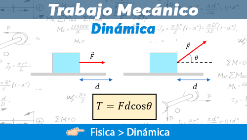

Definición
Una fuerza constante genera trabajo cuando, aplicada a un cuerpo, lo desplaza a lo largo de una determinada distancia.
Mientras se realiza trabajo sobre el cuerpo, se produce una transferencia de energía al mismo, por lo que puede decirse que el trabajo es energía en movimiento. Por otra parte, si una fuerza constante no produce movimiento, no se realiza trabajo. Por ejemplo, el sostener un libro con el brazo extendido no implica trabajo alguno sobre el libro, independientemente del esfuerzo necesario. El trabajo se expresa en Joules (J).
-----------------------------------------------------------------------
El trabajo realizado cuando la fuerza tiene la dirección de movimiento se expresa:
L = F·d
L: Trabajo realizado por la fuerza.
d: La distancia en la cual se aplicó la fuerza.
-----------------------------------------------------------------------
El trabajo realizado cuando la fuerza aplicada tiene una inclinación α con respecto al movimiento se expresa:
L = F·d·cos α
-----------------------------------------------------------------------
Para que una fuerza produzca trabajo dicha fuerza o una componente de la misma debe tener la dirección del movimiento o, dicho de otro modo, todas las fuerzas perpendiculares al movimiento no realizan trabajo.
La fuerza puede no ser mecánica, como ocurre en el levantamiento de un cuerpo o en la aceleración de un avión de reacción; también puede ser una fuerza electrostática, electrodinámica o de tensión superficial.
-----------------------------------------------------------------------
Energía.
-----------------------------------------------------------------------
La magnitud denominada energía enlaza todas las ramas de la física. En el ámbito de la física, debe suministrarse energía para realizar trabajo. La energía se expresa en joules (J). Existen muchas formas de energía: energía potencial eléctrica y magnética, energía cinética, energía acumulada en resortes estirados, gases comprimidos o enlaces moleculares, energía térmica e incluso la propia masa.
-Energía cinética.
-Energía potencial.
-Fuerzas conservativas y no conservativas o disipativas.
-Potencia.